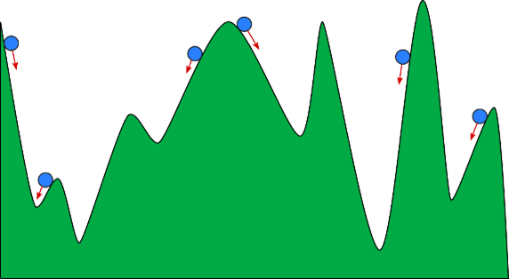
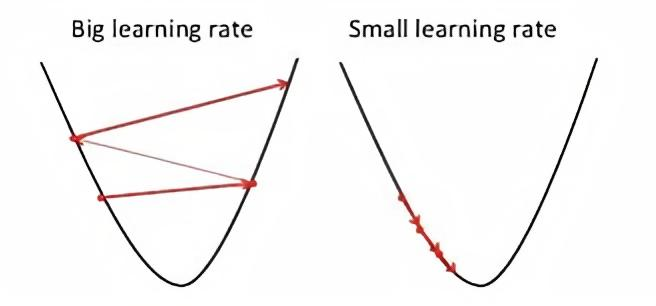

What is Gradient Decent?
Gradient descent is an optimization algorithm used to minimize some function by iteratively moving in the direction of steepest descent as defined by the negative of the gradient.
In analogy, we can think of Gradient Descent as being a ball rolling down on a valley. The deepest valley is the optimal global minimum and that is the place we aim for. Depending on where the ball starts rolling, it may rest in the bottom of a valley. But not in the lowest one. This is called a local minimum and in the context of our model, the valley is the error surface.

"we can think of Gradient Descent as being a ball rolling down on a valley."
Similarly, the way we initialize our model weights may lead it to rest in a local minimum. To avoid that, we initialize the two weight vectors with values from a random normal distribution with zero mean and low variance.
At each iteration, we are going to take a random subset of our dataset and linearly combine it with our weights. This subset is called a mini batch. After the linear combination, we feed the resulting vector in the MSE (mean of squared errors) function to calculate the current error.
With this error signal, we can calculate the partial derivatives of the error and get the Gradient.
This step size is calculated by multiplying the derivative to the learning rate. The value of the step should not be too big as it can skip the minimum point and thus the optimisation can fail.

big learning rate vs small learning rate
the cost function within gradient descent updates its accuracy with each iteration of parameter updates. Until the function is close to or equal to zero, the model will continue to adjust its parameters to yield the smallest possible error.